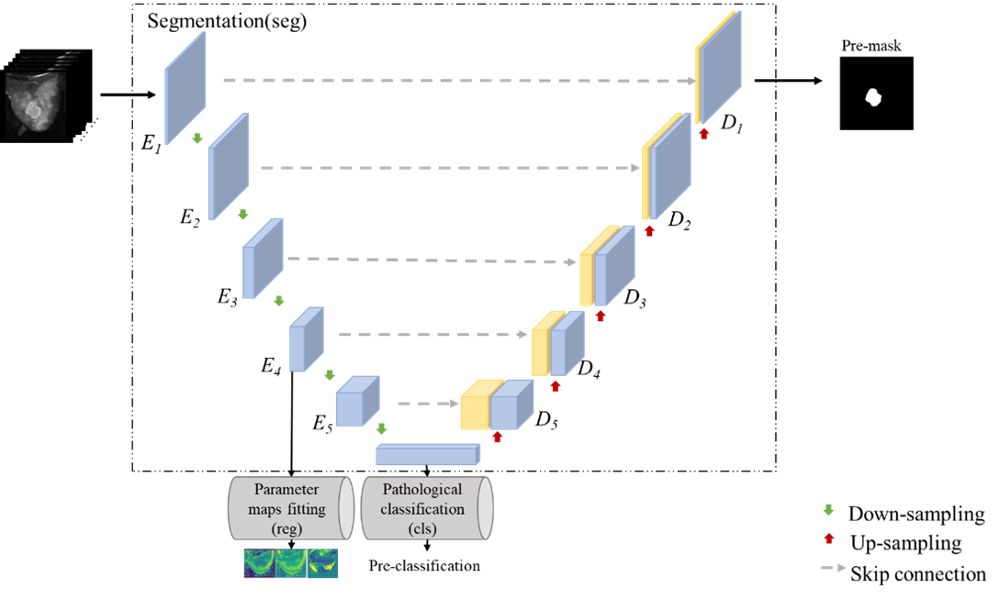
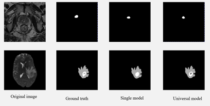

CLIP-Driven Universal Model for Tumor Detection Based on Magnetic Resonance Images

Published Wed 06 September 2023
Tumors are a leading cause of death in humans, underscoring the critical importance of early detection and diagnosis through imaging techniques. Magnetic Resonance Imaging (MRI) has emerged as a valuable tool for tumor screening and detection due to its non-invasive nature, absence of radiation, and high spatial resolution.
Therefore, our primary research objective is to develop a comprehensive and unified model specifically designed for the analysis of magnetic resonance (MR) tumor images. This ambitious undertaking aims to provide a multifaceted solution that concurrently addresses various pivotal tasks integral to tumor characterization. These tasks include, but are not limited to, precise tumor segmentation, nuanced classification to discern between benign and malignant manifestations, and sophisticated classification of tumors based on molecular attributes. Our overarching objective is to devise a model of notable sophistication and versatility, capable of comprehensively enhancing the diagnostic capabilities within the realm of tumor analysis and making substantive contributions to the field of medical imaging research.
The specific research route is illustrated in Figure 2. The universal model we are developing supports multiple forms of MR input, such as T1, T1w, T2, Flair, DWI, DCE, and ADC. Additionally, it accommodates multiple organ sites, including the brain, chest, and abdomen. In terms of output, the universal model supports various tasks, such as tumor segmentation, classification of benign and malignant tumors, classification of tumor molecular characteristics, and prediction of biochemical recurrence.
Our aim is to design a model that is not only versatile in terms of input variations and organ sites but also capable of performing diverse tasks related to tumor analysis. By encompassing a wide range of tumor-related aspects, our research endeavors to provide clinicians with a powerful tool that aids in accurate diagnosis, prognosis, and treatment planning.
Through our research, we strive to advance the field of medical imaging by developing a sophisticated and comprehensive model that can effectively analyze MR tumor images. By enabling precise segmentation, accurate classification, and molecular characterization of tumors, we aim to enhance the overall understanding and management of tumors, ultimately improving patient outcomes.
An Explainable MRI Framework for Breast Tumor Using Amide Proton Transfer Weighted Imaging

Published Wed 06 September 2023
Breast cancer is a malignant disease that poses a significant threat to women's health. Early detection and timely treatment are crucial for improving the survival rate of breast cancer patients. Magnetic Resonance Imaging (MRI) has gained international recognition as an effective method for breast cancer detection. It offers high safety and is suitable for routine breast screening.
MRI has the advantage of providing high-resolution images with excellent soft tissue resolution. However, it presents challenges in clinical applications, such as uneven gray levels and fuzzy boundaries, which make tumor segmentation difficult.
In this context, we propose an interpretable breast tumor segmentation network based on multi-task learning, utilizing APT (Amide Proton Transfer) image sequences. APT image sequences exhibit distinctive APTw (Amide Proton Transfer-weighted) effects in breast tumors and the surrounding glandular tissues. Our method combines APT parameter maps with pathological data to assist in the tumor segmentation task. We employ a convolutional neural network to extract features from APT image sequences and analyze the contribution of different pulse frequencies to segmentation, enhancing the interpretability of the model.
The results of tumor segmentation and classification using APT image sequences demonstrate that different pulse frequencies have varying importance in the segmentation outcomes. By selecting the imaging frequency based on importance, the imaging time can be reduced, optimizing efficiency. Furthermore, the combination of APT parametric maps and pathological data yields superior segmentation results compared to using APT image sequences alone. This indicates that the APT effect contributes to improving the accuracy of tumor segmentation.
The proposed deep learning multi-task model, when combined with APT image sequences, enhances the accuracy of breast tumor segmentation. This approach provides a novel idea for breast tumor diagnosis, offering potential improvements in diagnostic accuracy and patient care.
Project leaders
ZhuonengZhang QiuhuiYang
Partner Organisations
杭州市第一人医院 上海长海医院
Project Example

Comparison of different models in segmentation of tumor